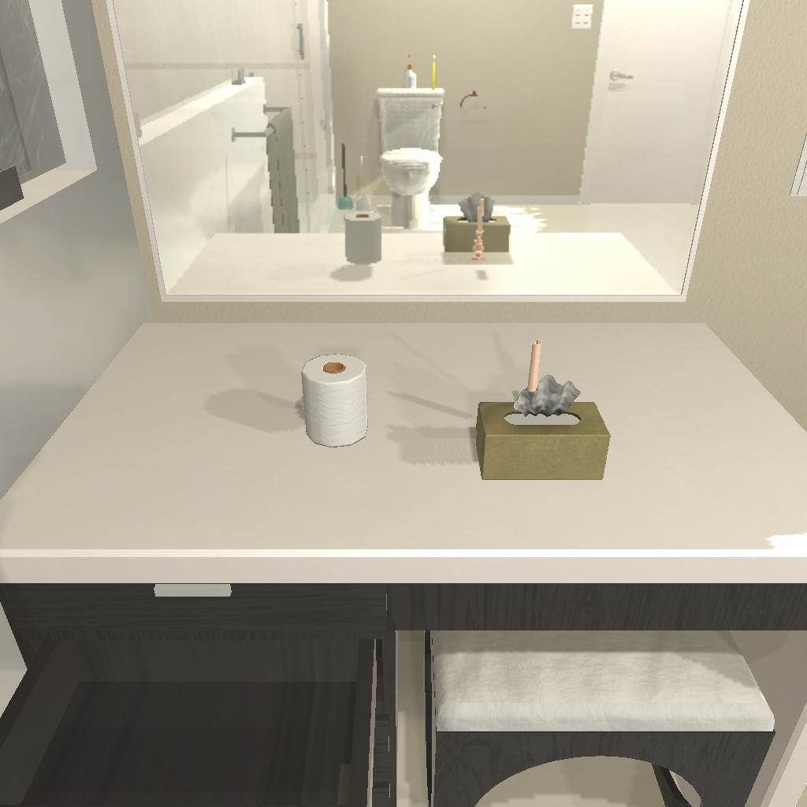

---------------------------------------------------------task: 28---------------------------------------------------------
--------------------------------------------------------------------------------------------------------------------------------------------------------------------
--------------------------------------------------------------------------------------------------------------------------------------------------------------------
Step:--------------------------------------------------------------------------12-------------------------------------------------------------------------------
----------------------------------------
VLM Prompt:
Image1:
Image2:
Image3:
**Instruction**
1. Analyze the provided images to identify all visible household objects and compare the difference between images (e.h. whether the object is opened or not and taken on hand or not), focusing on those relevant to the task description "put two spraybottle in toilet."
2. Use the analysis of images and the task hint "The agent must find an object of the desired type, pick it up, find the correct location to place it, put it down there, then look for another object of the desired type, pick it up, return to previous location, and put it down there with the other object." to answer the question: what is the most reasonable action in the choices for the task description "put two spraybottle in toilet"?
3. Decide and write the answer using the template: The answer is: (i): , where i is the real number. If there is no desired object in images, search every place based on **Initial Observation** to find the object. And if no one is exactly correct, choose a similar answer.
**Initial Observation**
You are in the middle of a room. Looking quickly around you, you can see bathtub (1), bathtubbasin (1), cart (1), sink (1), garbagecan (1), sinkbasin (1), countertop (1), drawer (1-4), toilet (1), toiletpaperhanger (1)
**Answer Choices**
(1): go to bathtub 1
(2): go to bathtubbasin 1
(3): go to cart 1
(4): go to sink 1
(5): go to garbagecan 1
(6): go to sinkbasin 1
(7): go to drawer 2
(8): go to drawer 3
(9): go to drawer 4
(10): go to toilet 1
(11): go to toiletpaperhanger 1
(12): close drawer 1
(13): take tissuebox 1 from drawer 1
(14): take toiletpaper 1 from drawer 1
(15): take handtowel 1 from drawer 1
(16): take candle 1 from drawer 1
(17): examine drawer 1
**Answer**
Let's think step by step by following the instructions.
----------------------------------------
----------------------------------------
Original Response:
Firstly, analyzing the provided images, we can see objects such as a toilet, sink, countertop, mirror, toiletpaper, and a candle on the countertop. There are also drawers and a stool under the countertop. However, there are no spray bottles visible in any of the images.
Based on the task description "put two spraybottle in toilet," the most reasonable action is to find and pick up the spray bottles. Since they are not visible in the images, we must search every place based on the Initial Observation to find the object.
The Initial Observation does not list any spray bottles, but it does mention a cart, which could potentially hold cleaning supplies including spray bottles.
The answer is: (3): go to cart 1.
----------------------------------------
----------------------------------------
>>> Refine Original VLM Response and Get Pure Action: go to cart 1
----------------------------------------
-----------------------------------------------------------------
Running time: 11.898598670959473 seconds
Total Money: 17.881709999999984
-----------------------------------------------------------------
-----------------------------------------------------------------
Text Observation:You arrive at loc 2. On the cart 1, you see a tissuebox 2, a tissuebox 3, a faucet 1, a soapbottle 2, a spraybottle 2, a spraybottle 3, a toiletpaper 2, and a soapbar 1.
-----------------------------------------------------------------
UNSUCCEED